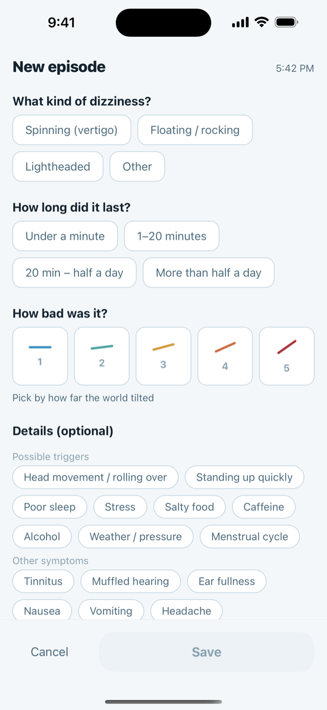
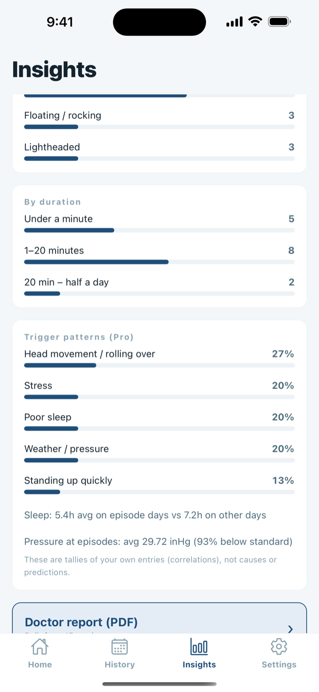

Write it down while it is still happening.
Log a spinning, floating or lightheaded attack in three taps. One PDF for the appointment. For Ménière's and BPPV.

Vertigo record report Jul 9 – Aug 7
9episodes
9days
2.9avg severity
| Date | Type | Sev. |
|---|---|---|
| Aug 7, 7:15 | Spinning | 3 |
| Aug 5, 14:15 | Floating | 2 |
| Aug 2, 9:15 | Spinning | 4 |
6 more
Recorded by the patient. No diagnosis.
During the attack
Three questions
One tap each. Nothing is typed.
Pressure and weather
Two records, one timeline
These are tallies of your own entries, not causes or predictions.

Free and Pro
| Free, forever | DizzyLog Pro |
|---|---|
| Recording and timer | Doctor-ready PDF |
| Recent history, pressure chart, daily logs | Full history, all insights, pre-drop alerts |
| Record reminders | CSV export |
Recording is free
No ads, and recording never locks. Pro is a yearly plan with a 14-day free trial, or a one-time purchase — both unlock the same features.
Your data
On the device only
No server, so no account.
A journal, not a medical device. It does not diagnose or predict.
- New, sudden or severe dizziness needs a doctor, not an app.
- Dizziness with chest pain, weakness on one side, trouble speaking, double vision or sudden hearing loss is an emergency — seek care immediately.